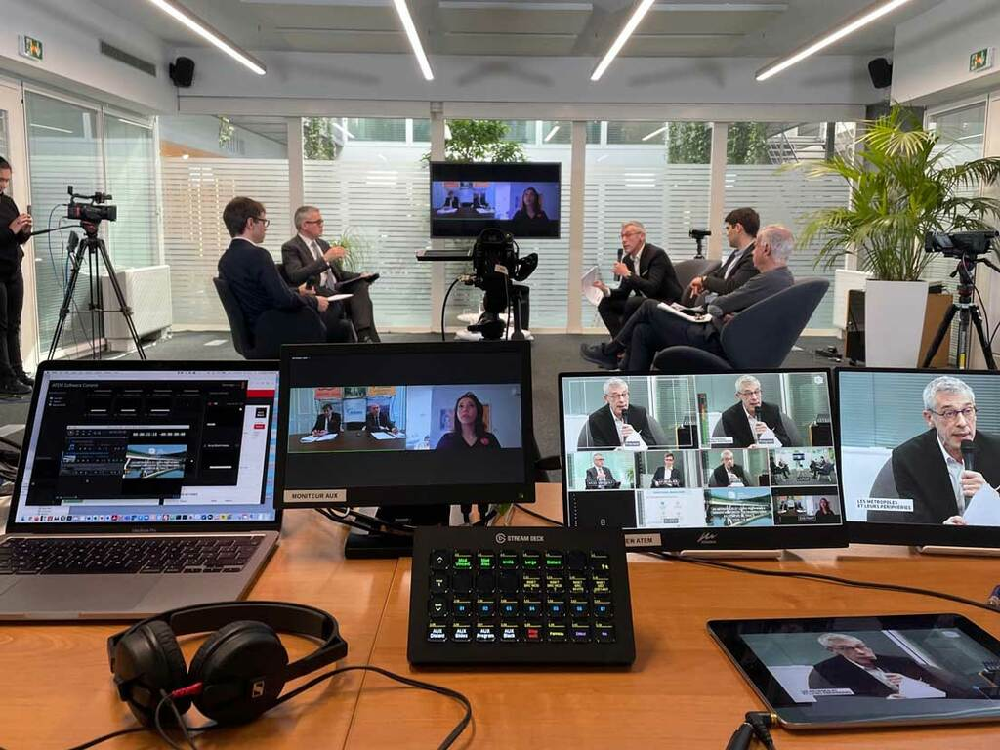
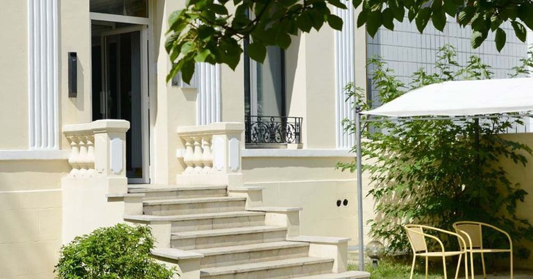
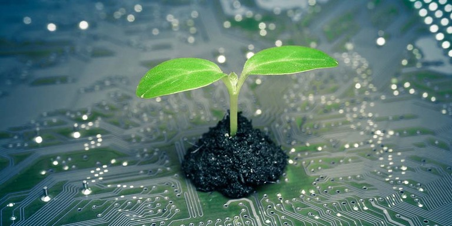

Co-fondée par Michel Zaouia et Karine Zaouia en 2017, À VOUS LE DIRECT est une société de production audiovisuelle basée à Courbevoie et spécialisée dans la captation live et la diffusion d’événements en direct.
Nous filmons et retransmettons vos événements en live streaming : conférences, assemblées, tables rondes, webinaires, formations, séminaires, interviews, communications, réunions et conseils. Nous mettons la puissance du live au service de tous. Nous utilisons les dernières innovations en matière de streaming pour proposer des prestations de qualité à un prix compétitif et obtenir la satisfaction de nos clients.
Notre offre inclut la captation vidéo et audio, l’habillage de la vidéo pendant le direct, la diffusion sur la plateforme de streaming, réseaux sociaux ou visioconférence de votre choix et les dispositifs d’interactivité. Elle comprend la fourniture du dispositif technique (matériel, logiciels et plateformes) et humain (cadrage, réalisation et ingénierie), ainsi que notre accompagnement tout au long de la préparation de votre événement. Cliquez pour en savoir plus.
Notre premier atout est d’être des experts du direct : avec plus d’une centaine de tournages lives réalisés, nous vivons quotidiennement les usages et les techniques de ce secteur en mutation très rapide. Chaque projet est suivi par un associé de la société, présent le jour de la captation. Cela vous assure qu’un interlocuteur décisionnaire apporte toutes les solutions nécessaires. Nous ne sous-traitons aucun projet. En revanche, nous pouvons être amenés à faire travailler des experts de haut niveau en freelance et sous notre contrôle pour assurer un résultat optimal.
Contrairement à la plupart de nos concurrents, nos moyens de production audiovisuelle nous appartiennent, ce qui vous garantit à la fois disponibilité des dispositifs et expertise sur les outils employés. Enfin, là où d’autres sont des vidéastes venus du film d’entreprise qui s’essayent ponctuellement au live streaming, nous disposons d’une expertise informatique approfondie en développement web, systèmes et réseaux. Cela facilite la collaboration avec les DSI des entreprises dans lesquelles nous sommes amenés à intervenir et nous permet de délivrer des prestations fiables et performantes.
Nous réalisons plus d’une cinquantaine de tournages en direct chaque année pour de nombreux clients comme Arianespace, BNP Paribas, Ipsos, Smile, Fidal, Nexans, Autorité de Sûreté Nucléaire, AP-HP, CNRS, Fondation groupe EDF, IFEC, Lucca, Imagine, Archives Nationales, INAFON, Grande Ecole du Numérique, Rire Médecin, En Marche !, Inserm, Ville de Creil, CIDJ, Institut Paris Region et bien d’autres.
20 ans en groupe médias, entre technique, éditorial et production de contenus images et vidéos. Notre première expérience du live streaming ? En 2000, avec un « chat » vidéo modéré pour Vizzavi où Marc Blondel était l’invité, capté rue du Faubourg Saint-Honoré à Paris et diffusé sur réseaux Akamai. À ce moment-là, c’était encore l’ère du player Java, et la plupart des internautes découvrait la « raie ADSL » après avoir usé leurs 50 heures de connexion AOL offertes. Cela ne nous rajeunit pas, mais la passion,
Nous vous accueillons sur rendez-vous dans nos locaux au 293-295 boulevard Saint-Denis à Courbevoie.
Notre agence se préoccupe de la préservation de notre environnement et de l’empreinte carbone qu’elle émet lors de la diffusion de vos événements en live streaming.
Nous streamons sur toutes les plateformes du marché, mais lorsque nos clients nous demandent de fournir la plateforme de streaming, nous utilisons Vimeo, qui est hébergé sur infrastructure Google Cloud Platform. Google compense à 100% ses émissions carbones par l’utilisation d’énergies renouvelables et le financement de programmes de compensation d’émissions.
Confier la captation live de votre prochain webinaire à À VOUS LE DIRECT, c’est bénéficier :